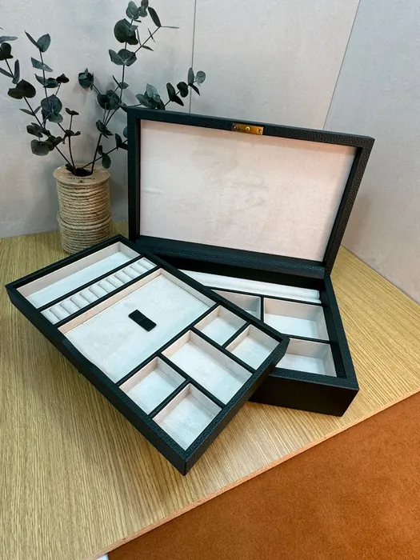
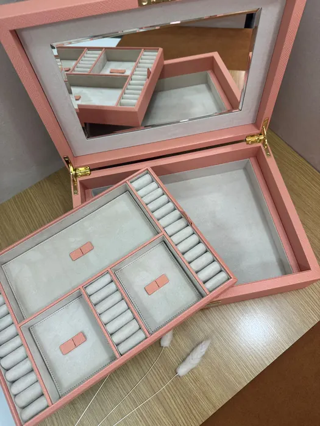
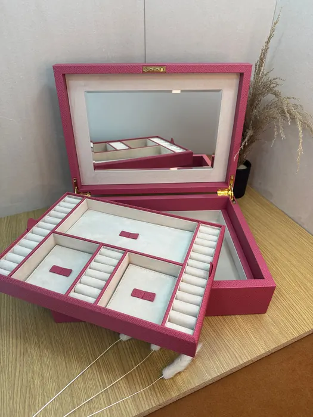

Joyero mediano con bandeja extraible cuero verde375 IVA incluido
Inicio / La tienda / Joyero grande con bandeja extraible cuero camel

Diseñado para los amantes de la joyería más exigentes, este joyero de alta gama combina lujo, funcionalidad y artesanía. Con espejo interior, bandeja extraíble y cerradura premium, está hecho a mano en España con piel vacuno y herrajes de lujo.
Descubra el joyero más exclusivo de JarénCrafts, creado para quienes valoran el diseño refinado y la funcionalidad impecable. Este modelo de alta gama destaca por su tamaño generoso, su bandeja superior extraíble y un espejo interior integrado, pensado para ofrecer una experiencia de uso práctica y sofisticada.
Fabricado artesanalmente en España con piel vacuno, su estructura de madera está forrada a mano con precisión y detalle. El interior está completamente revestido en microfibra de alta calidad, protegiendo cada joya de arañazos y deterioro. Su bandeja extraíble permite organizar piezas pequeñas, mientras que el compartimento inferior ofrece mayor capacidad.
Incorpora una cerradura de seguridad premium con llave tallada, con acabado dorado brillante, proveniente de uno de los mejores proveedores italianos de herrajes de lujo.
Material exterior: Piel vacuno italiana color camel.
Material interior: Microfibra ultrasuave color beig.
Herrajes: Cerradura de alta seguridad y bisagras doradas italianas.
Accesorios: Espejo interior y bandeja extraíble superior.
Capacidad: Joyero de gran formato con múltiples compartimentos.
Personalización: Opción de grabado exterior con nombre o iniciales (hasta 15 caracteres).
Producto 100% artesanal.
Fabricado en España, en nuestro taller, de forma ética y responsable.
¿Dudas con el tamaño o el color? Escríbenos por WhatsApp al 647 708 714 y te ayudamos a elegir la caja para tu colección.

Joyero mediano con bandeja extraible cuero verde Joyero grande con bandeja extraible cuero aqua
Joyero grande con bandeja extraible cuero aqua

Joyero grande con bandeja extraible cuero salmón
Joyero grande con bandeja extraible cuero fucsia